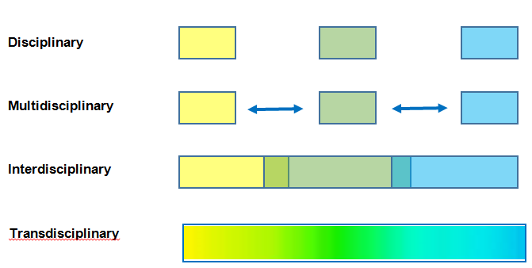

Transition of modes of working: disciplinary, multidisciplinary, interdisciplinary and transdisciplinary
Traditionally, chemists have been trained largely, if not entirely in their own discipline and have then been drawn into engagement with scientists from other disciplines. However, there are disadvantages to this compartmentalization of sciences:
Within a complex and mature discipline like chemistry, both the inspiration for research (whether ‘blue skies’ or ‘applied’) and the capacity to tackle problems often originates from knowledge or challenges coming from outside; and is increasingly dependent on the use of sophisticated techniques – such as advanced computing; analytical instrumentation, bioanalytical and biotechnology processes, methods of observation, measurement and manipulation – that often originate in another field. The history of advances in chemistry and the stories of many of the Nobel prizes in the field abound with examples of chemists who became aware of a problem or puzzling observation and of novel techniques that could be adapted for its investigation.
Each stand-alone discipline has acquired a set of distinctive processes and methodologies. There are advantages in learning from an early stage how other branches of science think, what kinds of processes, techniques and measures they employ, how they think about constructing and testing hypotheses, what standards they apply to concepts such as purity and proof and what are considered to be the important fundamental and applied challenges in the field.
Working effectively across disciplines does not come automatically – it requires the development not only of knowledge of other fields but also of skills (including communication, thinking outside the box, being able to synthesise information of diverse kinds, working in teams) that should be inculcated from an early stage of science education.
In addition to challenging the capacities of individual chemists to adapt to working with scientists in other disciplines, there are also major systemic barriers to working across disciplinary boundaries. These include factors intrinsic to the nature of chemistry itself; structural factors in academic institutions and the persistence of traditional attitudes towards discipline-based subjects that become silos; difficulties in securing research funds and in publishing work; and the relative lack of value that some institutions place on cross-disciplinary and multi-authored research, which can hamper career progression.
Nevertheless, chemistry has increasingly been drawn into cross-disciplinary engagements, the nature of which can take a number of different forms as illustrated below.1 (Note: while they can be categorised separately in principle as below, there are often overlaps in practice with elements of the different forms being used in combination or tandem.)
Multidisciplinary– bringing together knowledge and problem-solving approaches from a host of fields that can each contribute, ‘side-by-side’, to different stages or aspects of problem-solving; and interdisciplinary – developing expertise in working across the boundaries between chemistry and other disciplines and transferring methods from one discipline to another.
Examples of practical operation of multidisciplinary and interdisciplinary sciences involving chemistry include:
Drug development – where medicinal/synthetic/analytical aspects of chemistry combine sequentially and iteratively with disciplines such as pharmacology, biology, toxicology and clinical sciences to produce a drug that is sufficiently effective, safe, stable and efficient to produce for clinical use
Botanical classification – a field that was transformed in the 20th century by the importation of chemistry techniques of isolation and structure elucidation to enable plants to be characterised and their classifications determined according to their chemical constituents, resulting in the emergence of ‘phytochemistry’ and ‘chemical plant taxonomy’.
Climate change science
Semiconductors – the development of which as the basis of modern computers has depended on an interdisciplinary approach to developing new materials with specific physical properties.
Transdisciplinary: beyond interdisciplinary (which still implies the autonomy of subjects working in cooperation), creating a new synthesis of chemistry and other subjects in which knowledge, methods and solutions are developed holistically: recognizing that valuable knowledge can be found in the spaces between defined disciplines, addressing the complexity of problems and the diversity of perceptions of them, and requiring not only in-depth knowledge and know-how of the disciplines involved, but also skills in moderation, mediation, association and transfer.2,3 It has been argued4 that the shift from disciplinary to transdisciplinary research corresponds to a transition from compartmentalised, corrective, problem solving approaches to systemic, preventive ones. The term ‘convergence’ has also been used to describe the approach to problem solving that cuts across disciplinary boundaries and integrates knowledge, tools, and ways of thinking from diverse disciplines.5
Many of chemistry’s greatest opportunities for contribution to human progress have been and in the future will be at the interfaces with other subjects, since the challenges that the world faces are complex and often require transdisciplinary solutions. Approaches that are cross-disciplinary in nature need to be fostered for chemistry to most effectively contribute.
In an analysis of the field, four criteria were suggested6 for transdisciplinary research: (1) Problem orientation: research questions derived from "real-world" problems. (2) A suitable definition of sub-problems which is a prerequisite for the integration of the results. (3) Free choice of scientific methods adequate for each of the sub-problems. (4) Close relations between the sub-problems are crucial for the development of an overall solution. Once there is recognition of the real-world problem and the scientific problem is defined independently of disciplines, they propose a four-stage process of problem solving: (1) Understanding of the problem: Identification and analysis of main questions. (2) Separation of the problem into fields of application of different methods (sub-problems). (3) Solution of the sub-problems with mutual connections. (4) Integration of the results into a solution of the entire problem – with the cross-disciplinary results leading to application of the proposed solutions. Examples include
In studies on environmental and ecological chemistry, the inputs of political and social as well as science knowledge are critical.7,8
The series of conferences on transdisciplinary amino acid research initiated in 1991 illustrate how a theme unifying chemistry, biology and medicine can drive new breakthroughs in knowledge and applications.9
Transdisciplinary research involving chemistry has been adopted in many areas including smart energy;10 chemistry/microbiology;11 life processes;12 cancer;13 tobacco harm reduction;14 bio-manufacturing, cardiovascular diseases, the grape and wine industry, child development and water supply;15 radiation biology;16 chemical biology;17 volcanic plumes;18 silicifying organisms;19 and soil science and its applications in the dairy industry.20
It is also notable that the adoption of cross-disciplinary approaches can make the field of chemistry much more attractive to potential students.21
References
10. Bingham Universty: smart energy.
11. University of Vienna: "Chemistry meets Microbiology".
12. Northwester University: Chemistry of Life Processes Institute.
14. Brock University: Transdisiplinary research: beyond boundaries.
21. National Institutes of Health: Breast Cancer and the Environment Research Program.